Chapter 1 · PDF 32–115
用基础模型构建 AI 应用
Introduction to Building AI Applications with Foundation Models
规模改变了 AI PDF 32–33
Introduction
如果只能用一个词描述 2020 年之后的 AI，那就是“规模”。ChatGPT、Google Gemini 和 Midjourney 背后的 AI 模型已经大到消耗全球不可忽略的一部分电力；与此同时，公开互联网数据甚至可能不够继续训练它们。
AI 模型规模扩大带来两项主要后果。第一，模型越来越强，能完成的任务越来越多，因此支持了更多应用。更多个人和团队开始借助 AI 提高生产率、创造经济价值并改善生活质量。
第二，训练大语言模型需要数据、算力和专业人才，而只有少数组织负担得起。这促成了“模型即服务”：少数组织开发模型，再把模型作为服务提供给其他人。想用 AI 构建应用的人，不必先投入巨资训练自己的模型，也能直接使用这些模型。
简而言之，AI 应用的需求上升了，构建 AI 应用的进入门槛却降低了。这使 AI 工程——在随手可得的模型之上构建应用的过程——成为增长最快的工程学科之一。
在机器学习模型上构建应用并不新鲜。早在 LLM 受到关注以前，AI 已经支撑商品推荐、欺诈检测和用户流失预测等许多应用。把 AI 应用投入生产的很多原则仍然相同，但新一代大规模、易获得的模型也带来了新的可能与新的挑战；这正是本书的主题。
本章先概览基础模型——它是 AI 工程爆发的关键催化剂；随后讨论一系列成功的 AI 用例，每个用例都说明 AI 擅长什么、又暂时不擅长什么。AI 能力每天都在扩展，预测未来会越来越困难；不过，现有应用模式既能帮助我们发现今天的机会，也能提示 AI 未来可能怎样继续使用。
本章最后会概览新的 AI 技术栈：基础模型带来了哪些变化，哪些原则没有改变，以及今天的 AI 工程师和传统 ML 工程师有什么不同。
AI 工程的兴起 PDF 34–56
The Rise of AI Engineering
基础模型由大语言模型发展而来，大语言模型又源自普通语言模型。ChatGPT 和 GitHub Copilot 看起来仿佛突然出现，实际上却是几十年技术进步的结果；最早的语言模型在 20 世纪 50 年代就已出现。本节将追踪几项关键突破，说明语言模型怎样一路演化成 AI 工程。
从语言模型到大语言模型 PDF 34–44
From Language Models to Large Language Models
语言模型已经存在很久，但直到采用自监督以后，才得以扩大到今天的规模。下面先快速解释语言模型和自监督分别是什么；如果你已熟悉，可以跳过这一小节。
语言模型
语言模型编码一种或多种语言的统计信息。直观地说，这些信息告诉我们：给定上下文后，某个词出现的可能性有多大。例如面对“My favorite color is __”（我最喜欢的颜色是__），一个懂英语的语言模型应该比“car”更常预测“blue”。
人们几个世纪前就发现了语言的统计特征。1905 年的福尔摩斯故事《跳舞的小人》中，福尔摩斯利用简单的英语统计规律，破解了一系列神秘火柴人符号。因为 E 是英语中最常见的字母，他推断出现最频繁的符号就代表 E。
后来，Claude Shannon 在第二次世界大战期间用更复杂的统计方法破译敌方消息。他关于英语建模的成果发表于 1951 年的里程碑论文“Prediction and Entropy of Printed English”。论文提出的许多概念——包括熵——今天仍用于语言建模。早期语言模型只处理一种语言；今天，一个模型可以涉及多种语言。
语言模型的基本单位是词元（token）。它可以是字符、单词或单词的一部分（例如 -tion），具体取决于模型。GPT-4 会把“I can’t wait to build AI applications”切成 9 个词元，如图 1-1；其中“can’t”又被拆成“can”和“’t”。
把原始文本拆成词元的过程叫词元化（tokenization）。对 GPT-4 来说，一个词元平均约等于四分之三个英文单词，因此 100 个词元大约是 75 个英文单词。
模型能处理的全部词元集合叫词表（vocabulary）。少量词元可以组合成大量不同单词，就像少数字母能组成许多词。Mixtral 8x7B 的词表大小是 32,000，GPT-4 是 100,256。词元化方法与词表大小由模型开发者决定。
为什么语言模型用词元，而不是直接用单词或字符？主要有三个原因：
- 和字符相比，词元能把单词拆成有意义的成分，例如“cooking”可拆为“cook”和“ing”，两部分都保留原词的一部分含义；
- 不同词元的数量少于不同单词的数量，所以词表更小，模型也更高效；
- 词元还能帮助模型处理未知单词。例如虚构词“chatgpting”可拆成“chatgpt”和“ing”，从而帮助模型理解它的结构。
词元在两者之间取得平衡：单位数量比单词少，携带的意义又比单个字符多。
语言模型主要有两类，它们的差别在于预测一个词元时可以看到哪些信息。
掩码语言模型（Masked language model）
掩码语言模型被训练为预测序列中任意位置缺失的词元，可以同时利用缺失位置之前和之后的上下文。本质上，它学习的是“填空”。面对“My favorite __ is blue”，它应该预测空缺很可能是“color”。著名例子是 BERT。
在本书写作时，掩码模型常用于情感分析、文本分类等非生成任务，也适合需要理解整体上下文的任务。例如调试代码时，模型要同时看错误之前和之后的代码。
自回归语言模型（Autoregressive language model）
自回归语言模型只利用此前的词元来预测序列中的下一个词元。它预测“My favorite color is __”后面会出现什么，并可以一个接一个地持续生成词元。今天，文本生成最常采用自回归模型，因此它比掩码模型更流行。本书若未特别说明，“语言模型”都指自回归模型。
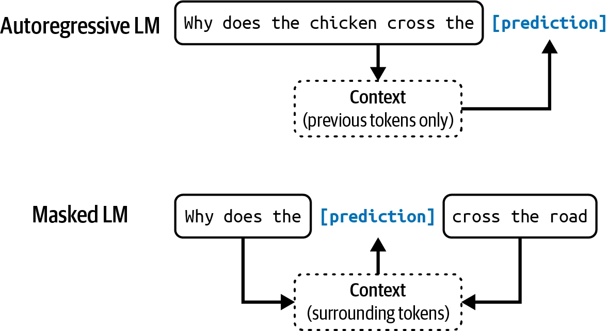
语言模型的输出是开放式的：用一个固定且有限的词表，也能组合出无限多种输出。能生成开放式输出的模型称为生成式模型，“生成式 AI”一词由此而来。
可以把语言模型理解为一台补全机器：给它一段文本（提示），它会努力把文本接下去。例如用户输入“To be or not to be”，模型可能补全“, that is the question.”。
但补全是基于概率的预测，并不保证正确。正是这种概率性，让语言模型既令人兴奋，又令人沮丧。看似简单的补全其实非常强大：翻译、摘要、编程和数学题都可以改写成补全任务。“How are you in French is …”可能被补成“Comment ça va”，从而完成翻译；在一封邮件之后写上“这封邮件可能是垃圾邮件吗？答案：”，模型可能补出“很可能是垃圾邮件”，于是它又变成了分类器。
不过，补全不等同于对话。向一台补全机器提问时，它可能在问题后面再接一个问题，而不是回答你。怎样让模型恰当地响应用户请求，会在后训练部分讨论。
自监督
语言建模只是众多 ML 算法之一，其他还有目标检测、主题建模、推荐系统、天气预测、股价预测等。为什么偏偏语言模型成为规模化路线的中心，并最终促成 ChatGPT 时刻？答案是：语言模型可以用自监督训练，而许多其他模型依赖监督学习。
监督学习使用带标签的数据训练算法，标签可能昂贵而缓慢。自监督绕过数据标注瓶颈，构建更大的训练集，让模型得以扩展。
在监督学习中，人先标记示例，展示希望模型学习的行为，再用这些示例训练。欺诈检测模型可以使用一批交易记录，每条都标成“欺诈”或“非欺诈”；学习后，再预测新交易是否欺诈。2010 年代 AI 的成功很大程度上来自监督学习。掀起深度学习革命的 AlexNet 就是监督模型，它使用 ImageNet 中一百多万张图片训练，把每张图片分到汽车、气球、猴子等 1,000 个类别之一。
监督学习的缺点是标注既昂贵又费时。如果每张图片的标注价格是 5 美分，给 ImageNet 的一百万张图片打标签要花 5 万美元；为了交叉检查质量，每张图片由两人标注，价格还要翻倍。现实世界远不止 1,000 类物体，如果扩展到一百万类别，仅标注成本就会升到 5,000 万美元。
日常物体人人都能标，所以价格还相对低；但不是所有标注都这么简单。为英语到拉丁语的模型生成翻译更贵，让专家判断 CT 扫描是否显示癌症迹象，成本更是惊人。
自监督让模型从输入数据本身推断标签，不再要求显式标注。语言建模天然适合自监督，因为每个输入序列既提供要预测的标签——后续词元——也提供预测标签所需的上下文。句子“I love street food.”就能产生六个逐步预测训练样本：
| 输入（上下文） | 输出（下一个词元） |
|---|---|
| <BOS> | I |
| <BOS>, I | love |
| <BOS>, I, love | street |
| <BOS>, I, love, street | food |
| <BOS>, I, love, street, food | . |
| <BOS>, I, love, street, food, . | <EOS> |
表 1-1 “I love street food.”为语言建模提供的训练样本。PDF 第 42 页。
表中的 <BOS> 和 <EOS> 分别标记序列开始和结束。模型要处理多个序列，就需要这些标记；每个标记通常被视为一个特殊词元。结束标记尤其重要，它帮助语言模型知道什么时候停止回答。
自监督不同于无监督。在自监督学习中，标签由输入数据推断；无监督学习则完全不需要标签。
自监督意味着语言模型无需人工标注，就能直接从文本序列学习。书籍、博客、文章、Reddit 评论里到处都是文本，因此可以构建极其庞大的训练数据，使语言模型扩展成 LLM。
不过“LLM”并不是严格的科学术语。模型多大才算“大”？今天的大模型，明天可能就很小。模型大小通常以参数数量衡量。参数是 ML 模型内部会在训练过程中更新的变量。一般来说——尽管并非永远如此——参数越多，模型学习目标行为的容量越大。
OpenAI 第一代 GPT 于 2018 年 6 月发布，拥有 1.17 亿参数，当时已被认为很大。2019 年 2 月，拥有 15 亿参数的 GPT-2 出现后，1.17 亿又被降格为小模型。本书写作时，1,000 亿参数被视为“大”；也许有一天，它仍会变“小”。
大模型为什么需要更多数据？更大的模型有更高学习容量，因此需要更多训练数据才能充分发挥性能。也可以拿大模型训练小数据集，但那会浪费算力——在同一数据集上，小模型可能取得相近甚至更好的结果。
从大语言模型到基础模型 PDF 44–50
From Large Language Models to Foundation Models
语言模型能做惊人的任务，却受限于文本。人类不仅通过语言，还通过视觉、听觉、触觉等方式感知世界；AI 要在现实世界中运行，就必须处理文本以外的数据。
因此，语言模型正扩展到更多数据模态。GPT-4V 和 Claude 3 能理解图像与文本，有些模型甚至能理解视频、3D 资产和蛋白质结构。增加模态会让模型更强。OpenAI 2023 年的 GPT-4V 系统卡指出，一些人认为“把额外模态（例如图像输入）引入 LLM”是 AI 研发的关键前沿。
虽然很多人仍把 Gemini 和 GPT-4V 称为 LLM，但称作基础模型更合适。“基础”既表示这些模型在 AI 应用中的重要性，也表示它们可以作为底座，针对不同需要继续构建。
基础模型改变了传统 AI 研究按数据模态分割的结构：自然语言处理只做文本，计算机视觉只做图像。纯文本模型可以翻译或识别垃圾邮件，纯图像模型可以检测物体或分类图像，纯音频模型则处理语音识别（STT）与语音合成（TTS）。
能处理多种数据模态的模型称为多模态模型；生成式多模态模型也叫大多模态模型（LMM）。语言模型只根据文本词元生成下一个词元，多模态模型则能同时根据文本、图像词元或其他所支持模态来生成。
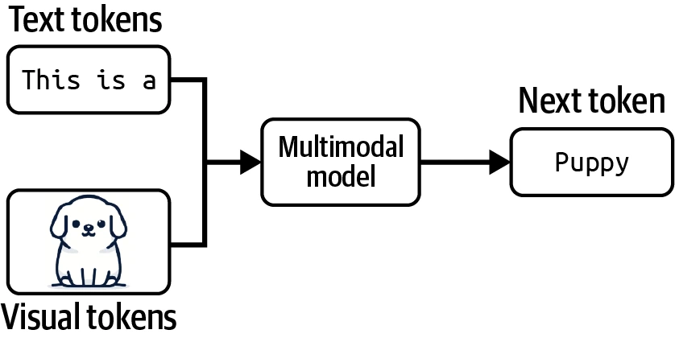
和语言模型一样，多模态模型也需要大量数据才能扩展。自监督同样适用于多模态模型。OpenAI 训练图文模型 CLIP 时，使用了自监督的一种变体——自然语言监督：不逐张人工标注图片，而是寻找互联网上共同出现的图像与文本对。这样得到约 4 亿个图文对，是 ImageNet 的 400 倍，且无需人工标注成本。这个数据集使 CLIP 成为第一个无需额外训练，就能泛化到多种图像分类任务的模型。
本书用“基础模型”同时指大语言模型与大多模态模型。需要注意，CLIP 不是生成模型，它没有被训练为产生开放式输出。CLIP 是嵌入模型，会为文本和图像生成联合嵌入。暂时可以把嵌入理解为试图捕捉原始数据含义的向量。CLIP 这类多模态嵌入模型，是 Flamingo、LLaVA 和 Gemini（原 Bard）等生成式多模态模型的骨干。
基础模型还标志着从任务专用模型向通用模型转变。过去的模型往往为情感分析或翻译等具体任务开发；情感分析模型不能翻译，翻译模型也不能分析情感。基础模型由于规模和训练方式，可以完成范围广泛的任务。通用模型开箱即用就能在很多任务上表现不错——一个 LLM 既能情感分析，也能翻译——并且还能进一步适配，以最大化某个具体任务的性能。
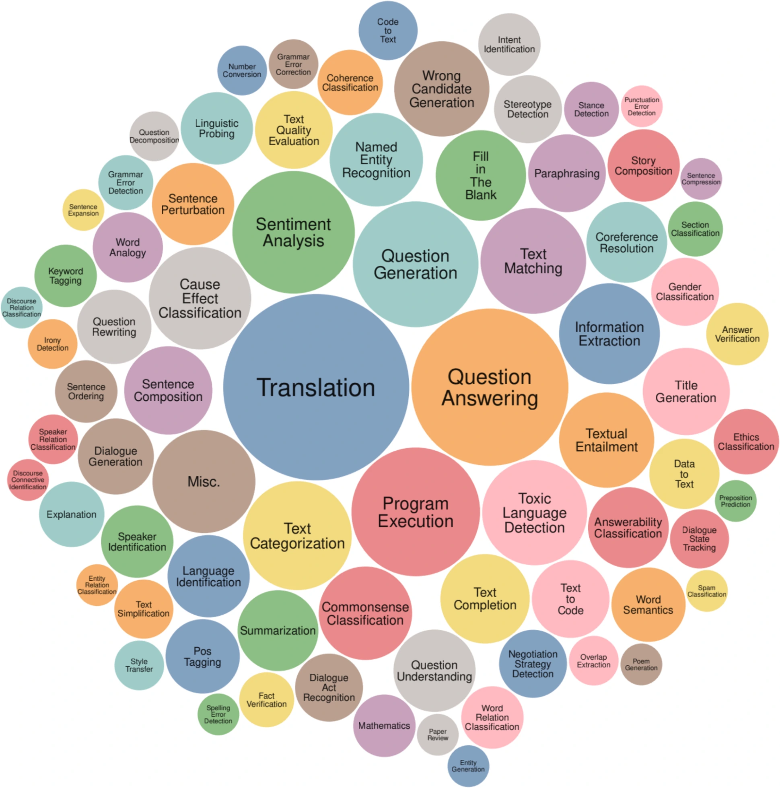
假设你为零售商构建商品描述生成应用。开箱即用的模型也许能写出内容准确的描述，却抓不住品牌语气和品牌信息，甚至充满营销套话与陈词滥调。
可以用多种技术让模型生成想要的内容。你可以写出详细指令，并加入理想商品描述的示例——这是提示工程；也可以把模型连接到客户评价数据库，让它参考这些信息生成更好的描述——用数据库补充指令叫作检索增强生成（RAG）；还可以用高质量商品描述数据继续训练模型，也就是微调。
提示工程、RAG 和微调是三种常见 AI 工程技术，用来把模型适配到具体需求。本书后面会逐一详细讨论。
通常，适配一个已有的强大模型远比从头为任务构建模型容易——可以是“10 个示例加一个周末”，对比“100 万个示例加 6 个月”。基础模型降低了开发 AI 应用的成本，也缩短了上市时间。适配究竟需要多少数据，取决于采用哪种技术。
但任务专用模型仍有很多好处，例如它们可能小得多，因而运行更快、成本更低。到底自己构建模型，还是利用已有模型，是每个团队都要自行回答的经典 Build or Buy 问题。
从基础模型到 AI 工程 PDF 51–56
From Foundation Models to AI Engineering
AI 工程指在基础模型之上构建应用的过程。人们开发 AI 应用已有十多年，过去常把这一过程称为 ML 工程或 MLOps。为什么今天还要专门谈 AI 工程？
如果说传统 ML 工程往往要开发模型，AI 工程则更多利用既有模型。强大基础模型变得可获得、可访问，带来三个共同推动 AI 工程快速成长的因素。
因素一：通用 AI 能力
基础模型的强大不只在于把既有任务做得更好，还在于能做更多任务。过去被认为不可能的应用现在成为可能，从未设想过的应用也在出现，甚至今天仍觉得不可能的事，明天也许就能做到。AI 因而能进入生活更多方面，用户群与应用需求都大幅增长。
例如 AI 如今能写出接近甚至超过人类的文字，那么几乎所有涉及沟通的任务都可以被完全或部分自动化：写邮件、回复客户请求、解释复杂合同。任何拥有电脑的人，都能立刻生成定制而高质量的图像和视频，用于营销材料、职业头像、艺术概念或图书插画。AI 甚至能合成训练数据、设计算法和编写代码，反过来帮助训练未来更强的模型。
因素二：AI 投资增加
ChatGPT 的成功促使风险资本和企业都大幅增加 AI 投资。AI 应用构建更便宜、上市更快，投资回报因而更有吸引力，企业争相把 AI 引入产品和流程。Scribd 应用研究高级经理 Matt Ross 告诉作者，他的用例从 2022 年 4 月到 2023 年 4 月，预计 AI 成本下降了两个数量级。
Goldman Sachs Research 估计，到 2025 年，美国 AI 投资可能接近 1,000 亿美元，全球接近 2,000 亿美元。AI 经常被当作竞争优势。FactSet 发现，2023 年第二季度，每三家 S&P 500 公司中就有一家在财报电话会议中提到 AI，数量约是前一年的三倍。
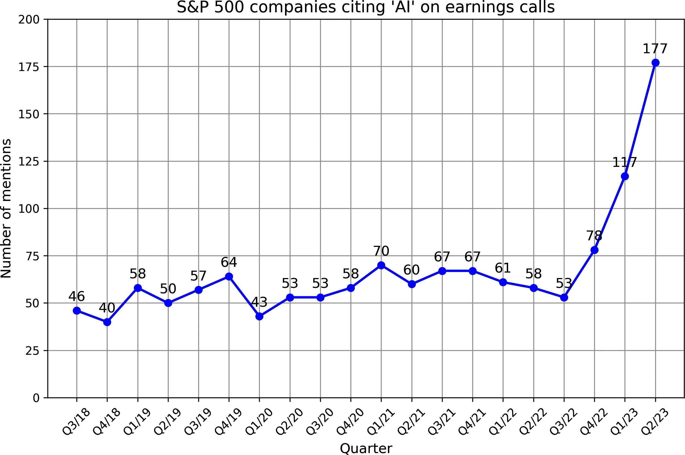
WallStreetZen 的数据称，在财报电话会议里提到 AI 的公司，股价平均上涨 4.6%；未提到 AI 的公司平均上涨 2.4%。但这究竟是因果——AI 让公司更成功——还是相关——成功公司更擅长快速采用新技术——并不清楚。
因素三：构建 AI 应用的进入门槛降低
OpenAI 和其他模型供应商普及了模型即服务，使开发者更容易利用 AI。模型通过 API 暴露，接收用户请求并返回输出；没有这些 API，使用模型就必须自备托管和服务基础设施。现在一次 API 调用就能访问强大模型。
AI 还让应用可以用很少的代码构建。它能替你写代码，让没有软件工程背景的人也能迅速把想法变成代码并交给用户；人还可以直接用自然语言与模型协作，不必只通过编程语言。现在，几乎任何人都可以开发 AI 应用。
开发基础模型资源消耗巨大，所以能做这件事的通常只有大型企业（Google、Meta、Microsoft、百度、腾讯）、政府（日本、阿联酋）和资金充足且雄心勃勃的创业公司（OpenAI、Anthropic、Mistral）。OpenAI CEO Sam Altman 在 2022 年 9 月的一次采访中说，对绝大多数人而言，最大的机会将是把这些模型适配到具体应用。
世界很快拥抱了这个机会。AI 工程迅速成为增长最快——很可能就是增长最快——的工程学科。AI 工程工具的增长速度超过以往的软件工程工具。短短两年，AutoGPT、Stable Diffusion Web UI、LangChain 和 Ollama 四个开源 AI 工程工具在 GitHub 上获得的星数已经超过 Bitcoin，并有望超过 React、Vue 等最流行的 Web 框架。
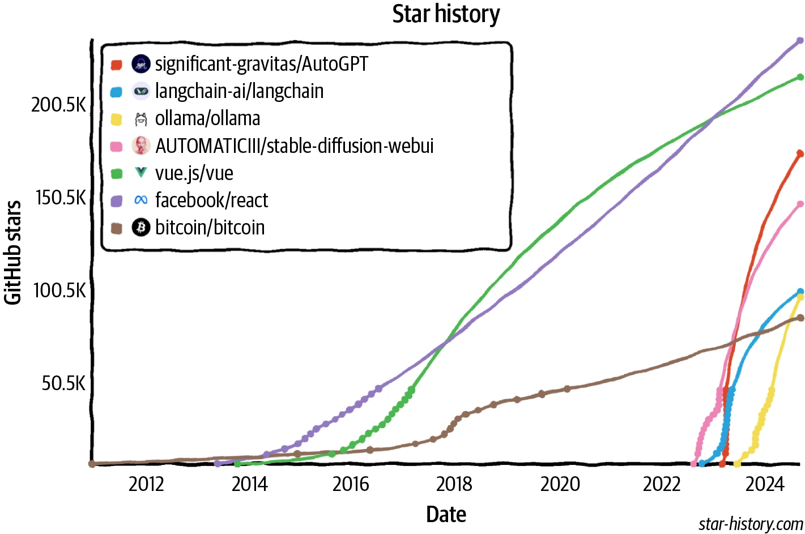
LinkedIn 2023 年 8 月的一项调查显示，把“Generative AI”“ChatGPT”“Prompt Engineering”“Prompt Crafting”等词加入个人资料的专业人士数量，平均每月增长 75%。ComputerWorld 宣称，“教 AI 学会恰当行动”是增长最快的职业技能。
为什么叫“AI 工程”？
描述在基础模型上构建应用的术语很多，包括 ML 工程、MLOps、AIOps、LLMOps 等。作者没有选择“ML 工程”，因为使用基础模型与使用传统 ML 模型存在几项重要差异，“ML 工程”不足以突出这种差异；不过，ML 工程仍是同时涵盖两者的优秀总称。
作者也没有采用各种以“Ops”结尾的术语，因为虽然过程包含运维成分，重点却更在于调校和工程化基础模型，让它执行所需任务。最后，作者调查了 20 名正在基础模型上开发应用的人，大多数人更喜欢“AI 工程”，于是她选择了从业者的答案。
快速扩大的 AI 工程师社区，已通过种类惊人的应用展示出非凡创造力。下一节将考察最常见的应用模式。
基础模型的应用场景 PDF 57–78
Foundation Model Use Cases
如果你还没有开发 AI 应用，作者希望上一节已让你相信这是很好的时机。如果脑中已有应用，可以直接跳到“规划 AI 应用”；如果正在寻找灵感，本节会覆盖大量已在产业中验证或很有前景的用例。
基础模型似乎能构建无穷无尽的应用。无论想到什么场景，大概都已经有人说“这个也有 AI”。不可能列完所有 AI 用例，甚至连分类都很困难，因为不同调查采用不同方式。AWS 把企业生成式 AI 用例分成客户体验、员工生产力和流程优化；O’Reilly 2024 年调查则分成编程、数据分析、客户支持、营销文案、其他写作、研究、网页设计和艺术八类。
Deloitte 等组织按价值获取分类，例如降本、流程效率、增长和加速创新。Gartner 还设有“业务连续性”类别，表示企业若不采用生成式 AI 可能无法继续生存。Gartner 2023 年调查 2,500 名高管，其中 7% 把业务连续性列为采用生成式 AI 的动机。
Eloundou 等人（2023）研究了不同职业对 AI 的“暴露程度”。如果 AI 或 AI 软件能把完成某项任务的时间至少缩短 50%，这项任务就算“暴露”；职业暴露度 80%，表示这个职业 80% 的任务符合条件。研究中接近或达到 100% 暴露的职业包括口译与笔译、税务人员、网页设计师和作家；厨师、石匠和运动员等职业则没有暴露。
| 人工标注组 | 暴露程度最高的职业示例 | 暴露比例 |
|---|---|---|
| α（直接使用 AI 模型） | 口译员与笔译员 | 76.5% |
| 调查研究人员 | 75.0% | |
| 诗人、歌词作者与创意作家 | 68.8% | |
| 动物科学家 | 66.7% | |
| 公共关系专家 | 66.7% | |
| β（AI 软件） | 调查研究人员 | 84.4% |
| 作家与作者 | 82.5% | |
| 口译员与笔译员 | 82.4% | |
| 公共关系专家 | 80.6% | |
| 动物科学家 | 77.8% | |
| ζ（AI 软件） | 数学家 | 100.0% |
| 税务申报人员 | 100.0% | |
| 金融量化分析师 | 100.0% | |
| 作家与作者 | 100.0% | |
| Web 与数字界面设计师 | 100.0% |
表 1-2 人工标注的 AI 暴露程度最高职业。α 表示直接暴露于 AI 模型，β 与 ζ 表示暴露于 AI 驱动的软件；共有 15 个职业被标为“完全暴露”。PDF 第 59 页。
为分析用例，作者同时研究企业和消费者应用：采访 50 家公司的 AI 战略，阅读 100 多个案例；又检查 GitHub 上 205 个至少拥有 500 颗星的开源 AI 应用，并把应用归为八组。下面的有限列表更适合当参考，而不是完整边界。
| 类别 | 消费者用例 | 企业用例 |
|---|---|---|
| 编程 | 编程 | 编程 |
| 图像与视频制作 | 照片与视频编辑、设计、演示文稿 | 广告生成 |
| 写作 | 邮件、社交媒体、博客 | 文案与 SEO、报告、备忘录、设计文档 |
| 教育 | 辅导、作文评分 | 员工入职与技能培训 |
| 对话机器人 | 通用聊天、AI 陪伴 | 客户支持、产品 Copilot |
| 信息聚合 | 摘要、与文档对话 | 摘要、市场研究 |
| 数据组织 | 图像搜索、Memex | 知识管理、文档处理 |
| 工作流自动化 | 旅行与活动规划 | 数据抽取/录入/标注、销售线索 |
表 1-3 消费者和企业中的常见生成式 AI 用例。PDF 第 61–62 页。
基础模型是通用的，所以一个应用可以同时属于多个类别：机器人既能陪伴，也能聚合信息；一个应用既能从 PDF 抽取结构化数据，也能回答有关 PDF 的问题。
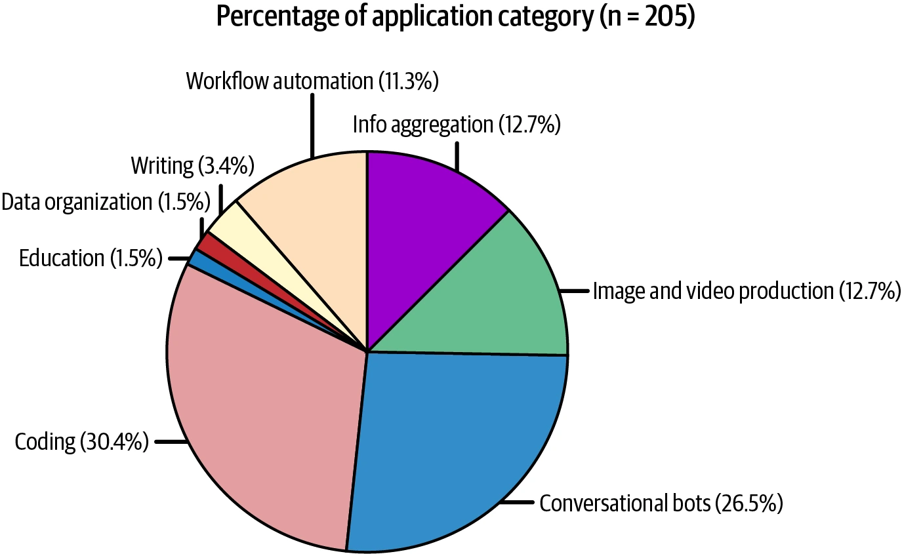
企业通常更喜欢低风险应用。a16z Growth 2024 年报告显示，企业部署内部应用（如内部知识管理）的速度快于外部应用（如客户支持机器人）。内部应用能帮助企业积累 AI 工程经验，同时降低数据隐私、合规和灾难性故障的风险。类似地，尽管基础模型能处理开放式任务，很多实际应用仍是分类等封闭任务，因为更容易评测，风险也更容易估算。
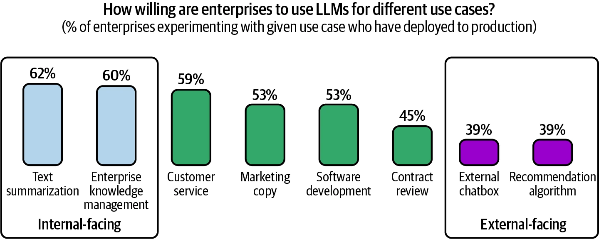
即使看过数百个 AI 应用，作者每周仍会遇到令人惊讶的新应用。互联网早期，很少有人预见到社交媒体会成为主导用例。随着人们学会充分利用 AI，最终占据主导地位的用例也可能出人意料——希望会是个好惊喜。
编程 PDF 64–67
在多项生成式 AI 调查中，编程毫无争议地是最流行的用例。原因既是 AI 擅长编程，也因为早期 AI 工程师本身就是程序员，更常面对编程难题。
基础模型最早进入生产的成功案例之一是 GitHub Copilot；发布仅两年，其年度经常性收入就超过 1 亿美元。本书写作时，AI 编程创业公司已融资数亿美元：Magic 在 2024 年 8 月融资 3.2 亿美元，Anysphere 同月融资 6,000 万美元。gpt-engineer 和 screenshot-to-code 等开源工具都在一年内获得 5 万颗 GitHub 星。
除通用编程工具外，还有大量专门任务：从网页和 PDF 抽取结构化数据（AgentGPT）；把英语转换成代码（DB-GPT、SQL Chat、PandasAI）；根据设计稿或截图生成相似网页（screenshot-to-code、draw-a-ui）；在编程语言或框架之间迁移（GPT-Migrate、AI Code Translator）；编写文档（Autodoc）；生成测试（PentestGPT）；生成提交信息（AI Commits）。
AI 显然能完成许多软件工程任务，但是否能完全自动化软件工程仍有争议。NVIDIA CEO Jensen Huang 预测 AI 会取代人类软件工程师，甚至认为不应再告诉孩子必须学编程；AWS CEO Matt Garman 则表示，未来多数开发者会停止亲自写代码，但这并非开发者职业终结，而是工作内容改变。另一端则有许多工程师从技术和情感上都坚信自己永不会被取代。
软件工程由许多任务组成，AI 对不同任务的能力不一。McKinsey 研究发现，AI 能让开发者在文档任务上的生产率提高一倍，在代码生成和重构上提高 25%–50%；高度复杂任务的提升很小。作者接触的 AI 编程工具开发者中，许多人还观察到 AI 做前端明显好于后端。
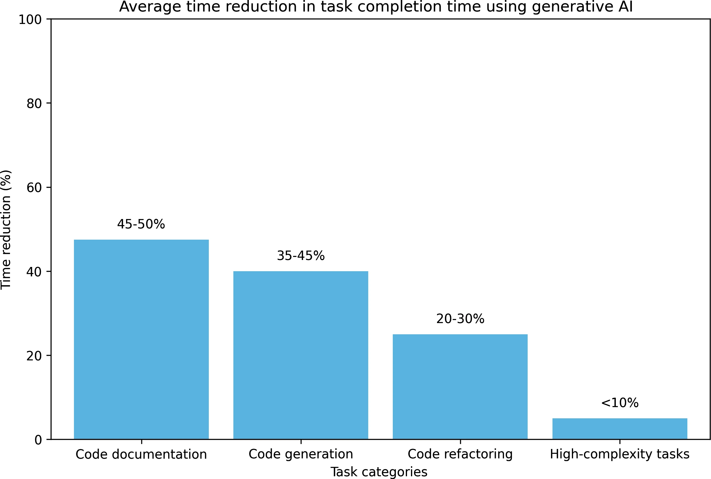
不论 AI 是否会取代软件工程师，它肯定能提高工程师的生产率，公司也就能用更少工程师完成更多工作。外包行业也可能受影响，因为外包任务通常更简单，也不属于企业核心业务。
图像与视频制作 PDF 67–68
AI 的概率性使它很适合创意任务。成功的 AI 创业公司中有很多创意应用：Midjourney 生成图像，Adobe Firefly 编辑照片，Runway、Pika Labs 与 Sora 生成视频。2023 年末，成立仅一年半的 Midjourney 已达到 2 亿美元年度经常性收入。2023 年 12 月，Apple App Store“图形与设计”前十名免费应用中，有一半在名称里包含 AI。作者怀疑不久之后，图形设计应用默认都会包含 AI，也就不再需要把“AI”写进名字。
用 AI 生成 LinkedIn、TikTok 等平台的头像已很常见。许多求职者相信 AI 职业照能展示更好的一面，提高求职成功率。公众态度变化也很大：2019 年 Facebook 出于安全原因封禁使用 AI 头像的账户；到 2023 年，许多社交应用已直接提供 AI 头像工具。
企业的广告与营销也迅速采用 AI。它可以直接生成推广图像和视频，帮助头脑风暴或制作供专家修改的第一版；还可以生成多个广告做测试，并按季节与地区制造变体，例如秋天改变树叶颜色，冬天在地面增加积雪。
写作 PDF 69–71
AI 长期以来一直辅助写作。智能手机用户熟悉的自动纠错和自动补全都由 AI 驱动。写作是理想用例，因为人们经常写、过程可能枯燥，而且对错误的容忍度高——不喜欢模型建议时，直接忽略即可。
LLM 为文本补全而训练，擅长写作并不意外。MIT 一项研究让 453 名受过大学教育的专业人士完成与职业相关的写作任务，并随机让一半人使用 ChatGPT。使用组平均耗时下降 40%，输出质量上升 18%。ChatGPT 还缩小了不同工作者之间的质量差距，对不擅长写作的人帮助更大。实验两周后，使用组报告在真实工作中继续使用 ChatGPT 的可能性是另一组的两倍；两个月后仍是 1.6 倍。
消费者用例很直观：把生气的邮件改得友善，把要点扩成完整段落，或在发送重要邮件前先让 AI 润色。学生用它写作文，作家用它写书，许多创业公司已生成童书、同人、爱情与奇幻作品。AI 图书还可以互动，根据读者偏好改变情节；有儿童阅读应用会识别孩子不熟悉的词，再生成围绕这些词的故事。
Google Docs、Notion、Gmail 等笔记与邮件应用都用 AI 改善写作；Grammarly 则微调模型，使文字更流畅、连贯、清晰。但这种能力也会被滥用。2023 年《纽约时报》报道，Amazon 涌入粗制滥造的 AI 旅行指南，连作者简介、网站和好评都由 AI 生成。
企业里，AI 写作常见于销售、营销和团队沟通。许多经理用它写绩效报告；它也能写陌生开发邮件、广告文案和商品描述。HubSpot、Salesforce 等 CRM 工具已支持生成网页内容和联系邮件。
AI 似乎特别擅长 SEO，也许因为许多模型使用的互联网训练数据本就充满 SEO 优化文本。它甚至催生新一代内容农场：垃圾网站大量生成文章以提升 Google 排名和流量，再通过广告交易平台卖广告位。2023 年 6 月，NewsGuard 在这类站点上发现来自 141 个知名品牌的近 400 个广告；其中一个网站每天生产 1,200 篇文章。如果不加限制，未来互联网内容可能充斥 AI 垃圾，前景会相当暗淡。
教育 PDF 71–73
每当 ChatGPT 宕机，OpenAI 的 Discord 服务器都会涌入无法完成作业的学生。纽约市公立学校、洛杉矶联合学区等教育机构起初担心作弊而迅速封禁 ChatGPT，却在几个月后撤销决定。
学校可以不封禁 AI，而把它纳入学习。AI 能总结教材，为每个学生生成个性化教学计划。作者认为很奇怪：我们知道每个人都不同，所以广告高度个性化，教育却没有。AI 可以把材料改成适合个人的形式：听觉学习者让 AI 朗读，喜欢动物的学生让可视化加入动物，更容易读代码而不是数学公式的学生，则可把公式转换成代码。
AI 对语言学习特别有帮助，因为它能扮演不同角色，提供练习场景。Duolingo 的 Pajak 和 Bicknell 发现，课程制作四阶段中，最能从 AI 获益的是课程个性化。
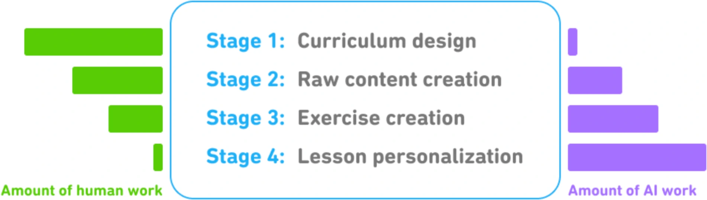
AI 能生成选择题和开放题并评阅答案，也能当辩论伙伴，比普通人更擅长展示同一议题的不同观点。Khan Academy 已为学生提供 AI 教学助手，也为教师提供课程助手。作者见过一种创新教法：教师把 AI 生成的文章交给学生，让他们找出并改正错误。
许多教育公司用 AI 改善产品，也有许多公司的市场被 AI 抢走。帮助学生写作业的 Chegg 股价，从 ChatGPT 在 2022 年 11 月发布时约 28 美元，跌到 2024 年 9 月约 2 美元。风险是 AI 可能替代许多技能；机会则是 AI 可以成为学习任何技能的导师，让人迅速入门，再继续自学并最终超过 AI。
对话机器人 PDF 73–74
对话机器人用途广泛：查找信息、解释概念、头脑风暴，也可以充当陪伴者和“治疗师”。它能模拟不同人格，让你与任何人的数字副本交谈；数字男女朋友在很短时间内变得异常流行，已经有人与机器人交谈的时间多于与人交谈，也有人担心 AI 会破坏约会。研究者还让一组对话机器人模拟社会，用于研究社会动态。
企业最常见的是客服机器人。它们能比人工更早回复用户，在降低成本的同时改善体验。AI 也可以是产品 Copilot，引导客户完成保险理赔、报税、查询公司政策等痛苦而混乱的任务。
ChatGPT 的成功带来大量文本机器人，但文本不是唯一界面。Google Assistant、Siri、Alexa 等语音助手已存在多年，3D 对话机器人在游戏中很常见，也开始用于零售与营销。AI 驱动的 3D 角色可成为智能 NPC。没有 AI 时，NPC 通常只能按脚本执行简单动作和有限对话；更智能的 NPC 既能改变《模拟人生》《上古卷轴》等现有游戏，也能让过去不可能的新游戏成为现实。
信息聚合 PDF 74–76
许多人认为，成功取决于筛选和消化有用信息的能力。但邮件、Slack 消息和新闻常让人不堪重负。AI 已证明自己能聚合并总结信息。Salesforce 2023 年生成式 AI 调查中，74% 的用户用它提炼复杂概念和总结信息。
消费者应用可以处理合同、披露文件和论文，让用户以对话方式检索信息，这种用例也叫“与你的文档对话”。AI 还能总结网页、研究资料，并围绕指定主题写报告。作者写本书时，也用 AI 总结和比较论文。
信息聚合与提炼对企业运作同样关键。更高效地聚合、传播信息，可以减轻中层管理负担，让组织更精简。Instacart 上线内部提示市场后，发现最流行模板之一是“Fast Breakdown”：让 AI 把会议记录、邮件和 Slack 对话整理成事实、未决问题和行动项，再把行动项自动写入项目跟踪工具并分配负责人。AI 还可以找出潜在客户的关键信息，并分析竞争者。
数据组织 PDF 76–77
可以确定的是，未来数据只会越来越多：手机用户继续拍照和录像，公司继续记录产品、员工和客户，每年还会产生数十亿份合同。照片、视频、日志和 PDF 都是非结构化或半结构化数据，必须以可供未来搜索的方式组织。
AI 能自动为图像和视频生成文字描述，也能把文本查询与匹配的视觉内容关联。Google Photos 已用 AI 找到符合查询的照片；Google Image Search 更进一步，如果没有现成图片满足需求，还可以生成一张。
AI 也很擅长数据分析：编写生成可视化的程序、识别异常值、预测收入等。企业可以从非结构化数据中抽取结构化信息，用于组织和搜索。简单场景包括从信用卡、驾照、收据、票据、邮件签名中提取字段；复杂场景则包括合同、报告和图表。预计智能文档处理（IDP）行业到 2030 年将达到 128.1 亿美元，年增长 32.9%。
工作流自动化 PDF 77–78
AI 最终应该尽可能多地实现自动化。消费者可以用它处理订餐、退款、旅行规划和填表等乏味日常任务；企业则可以自动化销售线索、开票、报销、客户请求和数据录入等重复工作。
一个特别令人兴奋的用例是让 AI 合成数据，再用这些数据改进模型本身。AI 可以先为数据生成标签，再把人引入回路修正标签。第 8 章会讨论数据合成。
许多任务还需要访问外部工具。预订餐厅时，应用可能要获准打开搜索引擎查电话号码，使用手机拨号，再把预约写进日历。能够规划并使用工具的 AI 称为智能体（agent）。围绕智能体的热情近乎痴迷，却并非毫无道理：它们可能显著提高每个人的生产率，并创造巨大的经济价值。智能体是第 6 章的核心主题。
研究各种 AI 应用很有趣，作者也喜欢设想自己能构建什么。但并非所有应用都应该被构建。下一节将讨论真正开发之前应该考虑什么。
规划 AI 应用 PDF 78–90
Planning AI Applications
AI 似乎拥有无穷潜力，因此人们很容易一头扎进应用开发。如果你的目标只是学习和获得乐趣，那就直接开始吧——亲手构建是最好的学习方式之一。在基础模型发展的早期，多位 AI 负责人都告诉作者，他们鼓励团队试做 AI 应用，以此提升团队能力。
但如果你靠这件事谋生，就值得先退一步，想清楚为什么要做，以及应该怎样做。借助基础模型做出一个很酷的演示很容易；做成一个能盈利的产品却很难。
应用场景评估 PDF 79–80
Use Case Evaluation
第一个问题是：为什么要构建这个应用？和许多商业决策一样，构建 AI 应用通常是对风险和机会的回应。按风险从高到低，可以分为三种情况。
- 不做就可能被采用 AI 的竞争对手淘汰。 如果 AI 对业务构成重大的生存威胁，那么采用 AI 必须拥有最高优先级。Gartner 2023 年的一项研究中，7% 的受访者把“业务连续性”列为拥抱 AI 的原因。文档处理和信息聚合相关业务——如金融分析、保险和数据处理——更常面临这种情况；广告、网页设计、图像制作等创意工作也是如此。
- 不做就会错过提高利润和生产率的机会。 多数企业采用 AI，是因为看到了它带来的机会。AI 几乎能帮助所有业务环节：用更有效的文案、产品描述和推广视觉降低获客成本；通过改善客户支持和定制用户体验提高留存；也能协助销售线索生成、内部沟通、市场研究和竞品追踪。
- 还不知道 AI 应该放在哪，但不想落后。 企业不应追逐每一次炒作，可许多公司也因等待太久而错失转型时机，例如 Kodak、Blockbuster 和 BlackBerry。如果负担得起，投入资源理解一种变革性新技术会怎样影响业务，并不是坏主意；在大公司里，这类工作通常属于研发部门。
找到足够好的理由后，还要问是否必须自己构建。如果 AI 威胁到企业生存，可能应把核心能力掌握在内部，而不是外包给潜在竞争者。若只是用 AI 提升利润和效率，市场上往往已有可购买的方案，能够节省时间和金钱，效果甚至更好。
AI 与人在应用中的角色 PDF 80–83
The Role of AI and Humans in the Application
AI 在产品里扮演什么角色，会影响整个应用的开发方式和要求。Apple 的一份文档解释了 AI 在产品中的多种用法，其中有三组区分与这里尤其相关。
关键能力，还是补充能力（Critical or complementary）
如果没有 AI，应用仍能工作，那么 AI 只是补充能力。Face ID 没有 AI 驱动的人脸识别就无法工作；而 Gmail 即使没有 Smart Compose 仍然能用。AI 对应用越关键，其准确性和可靠性要求就越高。当 AI 不是应用核心时，人们通常更愿意容忍它犯错。
响应式，还是主动式（Reactive or proactive）
响应式功能在用户提出请求或采取特定动作后给出结果；主动式功能则在系统认为出现机会时展示结果。聊天机器人是响应式的，Google Maps 的交通提醒是主动式的。
响应式功能由事件触发，通常——但并不总是——必须快速完成。主动式功能可以提前计算，在合适时机展示，因此延迟不一定同样重要。但由于用户并未请求主动式功能，质量低时更容易被视为打扰或令人厌烦，所以主动预测和生成通常需要更高的质量门槛。
动态，还是静态（Dynamic or static）
动态功能根据用户反馈持续更新；静态功能只定期更新。Face ID 需要随人的面部变化更新，而 Google Photos 中的物体检测大概只会在产品升级时更新。
对 AI 来说，动态功能可能意味着每个用户都有自己的模型，并持续用个人数据微调；也可能采用其他个性化机制，例如 ChatGPT 的记忆功能。静态功能则可能让一组用户共享一个模型，只有共享模型更新时，功能才随之更新。
还必须明确人在应用中的位置：AI 是在后台辅助人，直接做决定，还是两者兼有？以客服机器人为例，至少有三种安排：
- AI 给出多个候选回答，人工客服参考后更快地撰写回复；
- AI 只处理简单请求，把更复杂的请求转交给人；
- AI 不经人工参与，直接回复所有请求。
让人参与 AI 决策过程，称为 human-in-the-loop，即“人在回路中”。
Microsoft 在 2023 年提出了一个逐步提高产品 AI 自动化程度的框架，叫作 Crawl–Walk–Run：
- Crawl（爬）：必须有人参与；
- Walk（走）：AI 可以直接与企业内部员工交互；
- Run（跑）：进一步提高自动化，甚至让 AI 直接与外部用户交互。
随着系统质量提高，人的角色也可以改变。刚开始评估 AI 能力时，可以只让 AI 给人工客服提供建议。如果人工采用率非常高——例如对简单请求，95% 的 AI 建议被客服原样使用——就可以考虑让客户在这些简单场景里直接与 AI 交互。
AI 产品的防御性 PDF 83–85
AI Product Defensibility
如果把 AI 应用作为独立产品销售，就必须考虑它的防御性。低门槛既是祝福也是诅咒：你容易做出来，竞争者也同样容易。你的产品靠什么护城河来守住优势？
在基础模型上构建应用，本质上是在模型上面增加一层。这也意味着，只要底层模型扩展了能力，你提供的那一层就可能被模型吸收，应用随之失去价值。设想你基于“ChatGPT 不能很好地或大规模地解析 PDF”这一假设做了 PDF 解析应用；一旦假设不再成立，竞争力就会下降。不过，如果产品基于开源模型，并专门服务需要在内部托管模型的用户，它仍然可能成立。
一家大型风投机构的普通合伙人告诉作者，她见过很多创业公司的整个产品，其实都可能只是 Google Docs 或 Microsoft Office 的一个功能。假如产品成功了，什么能阻止 Google 或 Microsoft 安排三名工程师，用两个星期把它复制出来？
AI 领域通常有三类竞争优势：技术、数据和分发——也就是让产品真正到达用户面前的能力。使用基础模型以后，多数公司的核心技术会很相似，分发优势又更可能掌握在大公司手里。
数据优势更微妙。大公司通常拥有更多既有数据；但如果创业公司率先上市，并积累到足够多的使用数据来持续改进产品，数据也能成为它的护城河。即使不能直接用用户数据训练模型，使用信息仍能揭示用户行为和产品缺陷，并指导后续的数据收集与训练。
历史上有很多成功公司的起点，看起来都只是大产品里的一项功能：Calendly 本可成为 Google Calendar 的功能，Mailchimp 本可成为 Gmail 的功能，Photoroom 本可成为 Google Photos 的功能。许多创业公司正是从大公司忽略的小功能开始，最终超过了更大的竞争者。你的产品也可能成为下一个。
设定预期 PDF 85–86
Setting Expectations
一旦决定必须自己构建这个很棒的 AI 应用，下一步就是定义“成功”长什么样：你将怎样衡量成功？最重要的指标，是应用会如何影响业务。以客服机器人为例，业务指标可以包括：
- 希望机器人自动处理多大比例的客户消息？
- 它应该让团队多处理多少消息？
- 借助它，响应速度能提高多少？
- 它能节省多少人工？
机器人能回答更多消息，并不意味着用户一定更开心，所以还必须跟踪客户满意度和总体反馈。
为避免产品尚未准备好就交到客户手上，要明确它的可用阈值（usefulness threshold）——必须好到什么程度才真正有用。阈值可包含以下几组指标：
- 质量指标：衡量机器人回答的质量；
- 延迟指标：包括首词元时间 TTFT、每输出词元时间 TPOT 和总延迟。可接受延迟取决于场景。如果当前客户请求由人处理，响应时间中位数是一小时，那么任何快于一小时的方案都可能已足够；
- 成本指标：每次推理请求花多少钱；
- 其他指标：例如可解释性与公平性。
即使现在还不知道该选哪些指标，也不用担心；本书余下内容会覆盖其中许多指标。
里程碑规划 PDF 86–87
Milestone Planning
有了可衡量目标，还需要实现目标的计划。如何到达终点取决于起点。先评测现成模型，了解它们已有的能力。开箱即用的模型越强，你要做的工作越少。例如目标是自动处理 60% 的客服工单，而现成模型已经能处理 30%，所需投入可能远少于它完全不能自动处理时。
评测以后，目标很可能改变。你也许会发现，让应用达到可用阈值所需资源超过潜在回报，于是决定不再继续。
规划 AI 产品必须考虑“最后一公里挑战”。基础模型一开始就很强，初期成功可能具有误导性：周末就能做出有趣演示，但好演示并不保证好产品。演示也许只需一个周末，产品却可能需要数月甚至数年。
Ding 等人在 2023 年的 UltraChat 论文中写道：“从 0 到 60 很容易，而从 60 走到 100 会变得异常困难。”LinkedIn 在 2024 年也表达了同样的感受：他们用一个月达到了目标体验的 80%，这份早期成功让团队严重低估了后续时间；接着又花了四个月，才终于超过 95%。大量时间用在修补产品细节和处理幻觉上，而之后每提高 1% 都变得很慢，令人沮丧。
维护 PDF 88–90
Maintenance
产品规划不会在达到目标时结束。你还要思考产品会怎样随时间变化，以及应该怎样维护。AI 产品的维护尤其困难，因为 AI 的变化速度极快。过去十年里，AI 领域飞速前进；未来十年大概仍会如此。今天选择在基础模型上构建，就等于承诺搭上这列高速列车。
许多变化是好的：模型的限制正在被解决，上下文变长，输出质量变好，模型推理——根据输入计算输出的过程——也越来越快、越来越便宜。图 1-11 展示了 2022 到 2024 年间，模型在常用基础模型基准 MMLU 上的表现与推理成本如何演变。
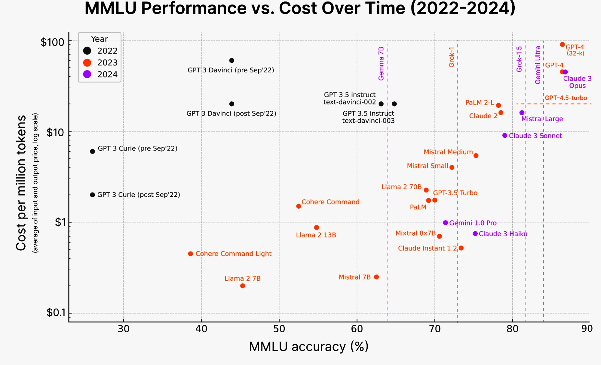
但即使是好变化，也会给工作流带来摩擦。你必须保持警觉，不断对技术投入做成本收益分析。今天最好的选项，明天可能变成最差的。你可能因为自建模型看起来比向供应商付费更便宜而选择自建，三个月后却发现供应商价格降了一半，自建反而成了昂贵方案；也可能围绕第三方方案定制了基础设施，而供应商融资失败、停止营业。
有些变化较容易适应。各模型供应商的 API 正逐渐趋同，因此替换 API 越来越容易。不过每个模型仍有自己的习惯、强项和弱点，开发者换模型后必须调整工作流、提示和数据。没有版本管理和评测基础设施，这个过程会令人非常头疼。
有些变化更难适应，尤其是监管。许多国家把 AI 相关技术视为国家安全问题，因此算力、人才和数据都会受到严格管制。比如，有估算认为企业为符合欧洲 GDPR 付出了 90 亿美元。新的法律也可能让算力供应在一夜之间变化——例如美国 2023 年 10 月的行政命令。如果 GPU 供应商突然被禁止向你的国家销售 GPU，麻烦就大了。
有些变化甚至可能致命。围绕知识产权和 AI 使用的法规仍在演进。如果产品建立在使用他人数据训练的模型之上，你能确定产品的知识产权永远属于自己吗？作者接触过的许多知识产权密集型公司——例如游戏工作室——正因为担心将来失去 IP，而犹豫是否采用 AI。
AI 工程技术栈 PDF 91–113
The AI Engineering Stack
一旦决定构建 AI 产品，就该看看开发这些应用所需的工程技术栈。AI 工程的快速增长也带来了惊人的炒作和 FOMO（害怕错过）。每天出现的新工具、新技术、新模型和新应用多得让人不知所措。与其追逐不断移动的流沙，不如先理解 AI 工程稳定的基本构件。
理解 AI 工程时，一个重要前提是：它由 ML 工程演化而来。企业刚开始试验基础模型时，通常自然会由现有的 ML 团队牵头。一些公司把 AI 工程和 ML 工程视为同一类工作，如图 1-12 所示；另一些公司则为 AI 工程设置独立职位，如图 1-13。
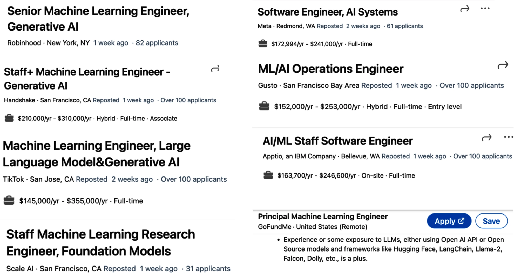
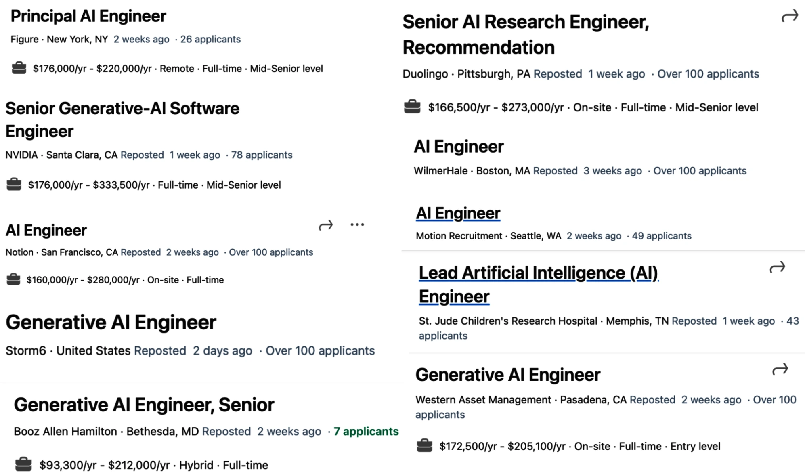
不论组织怎样安排 AI 工程师与 ML 工程师，这两个角色都有大量重叠。现有 ML 工程师可以把 AI 工程加入技能清单，拓宽职业机会；同时，也确实存在此前没有 ML 经验的 AI 工程师。
为了理解 AI 工程，以及它和传统 ML 工程的不同，下面把 AI 应用构建过程拆成不同层级，并分别考察每一层在 AI 工程和 ML 工程中的作用。
AI 技术栈的三层 PDF 93–97
Three Layers of the AI Stack
任何 AI 应用技术栈都可以分为三层：应用开发、模型开发和基础设施。开发 AI 应用时，你大概率会从最上层开始，只有需要时才向下深入。
- 应用开发：模型随手可得后，任何人都能用它们开发应用。过去两年里，这一层最活跃，而且仍在快速变化。应用开发包括为模型提供好的提示和必要上下文，也需要严格评测；好的应用还必须拥有好的界面。
- 模型开发：这一层提供开发模型所需的工具，包括建模、训练、微调和推理优化框架。数据是模型开发的核心，因此也包含数据集工程。模型开发同样需要严格评测。
- 基础设施：最底层包含模型服务、数据与算力管理，以及监控所需的工具。
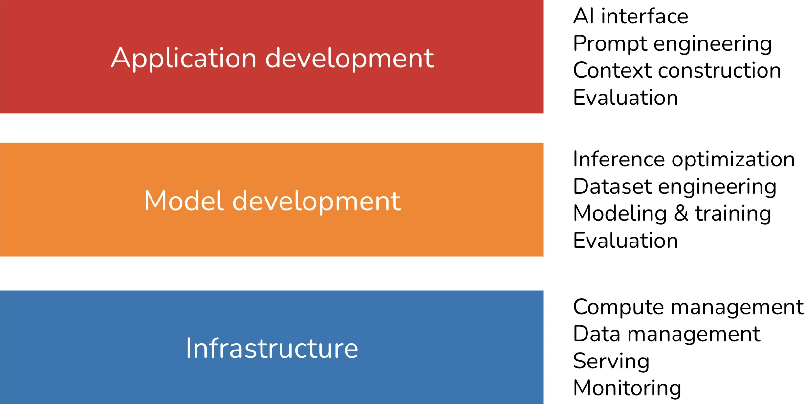
为了解基础模型如何改变整个生态，作者在 2024 年 3 月搜索了 GitHub 上所有至少拥有 500 颗星的 AI 相关仓库。考虑到 GitHub 的普及程度，她认为这组数据可以近似反映生态情况。分析还纳入了应用和模型仓库——它们分别是应用开发层与模型开发层的产物——最终得到 920 个仓库。图 1-15 展示了各类别仓库逐月累计数量。
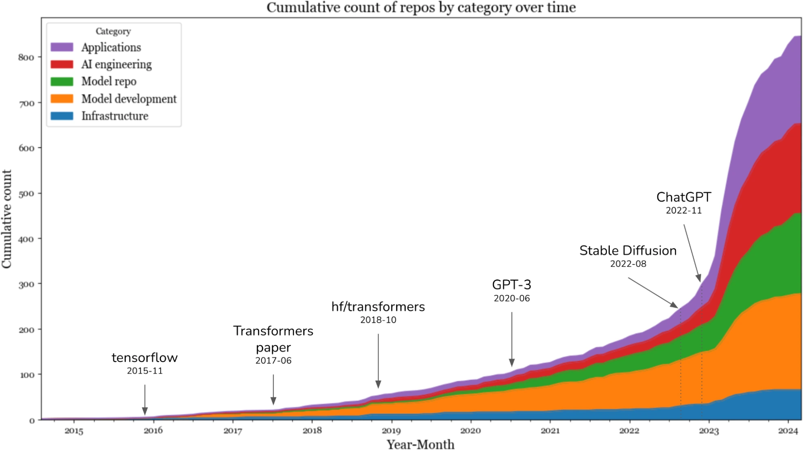
数据显示，Stable Diffusion 和 ChatGPT 出现以后，2023 年 AI 工具数量大幅跳升。增长最快的类别是应用和应用开发；基础设施也增长了，但远小于其他层。这很合理：模型和应用在改变，资源管理、服务、监控等核心基础设施需求却大体不变。
因此，即使围绕基础模型的兴奋和创造力前所未有，构建 AI 应用的许多原则仍然没变。企业用例仍需解决商业问题，所以仍要把业务指标映射到 ML 指标，也要反向映射；仍要进行系统性实验。经典 ML 工程会实验不同超参数，基础模型应用则会实验不同模型、提示、检索算法、采样变量等。我们仍希望模型更快、更便宜，也仍需要反馈闭环，用生产数据迭代改进应用。
这意味着 ML 工程师过去十年积累和分享的大量经验仍然适用。这些集体经验让更多人更容易开始构建 AI 应用；与此同时，稳定原则之上又出现了 AI 工程特有的创新，本书后面会继续讨论。
AI 工程与 ML 工程 PDF 97–100
AI Engineering Versus ML Engineering
部署 AI 应用的许多原则没有变化，这令人安心；但理解发生了什么变化也同样重要。它能帮助团队调整现有平台，以承接新的 AI 用例，也能帮助开发者判断应该学习哪些技能。
从高层看，今天使用基础模型构建应用，与传统 ML 工程有三项主要差异：
- 没有基础模型时，应用所需模型通常要自己训练；AI 工程则使用他人已经训练好的模型。因此，AI 工程对建模和训练关注较少，对模型适配关注更多。
- AI 工程使用的模型更大、消耗更多算力、延迟也高于传统 ML 模型，因此高效训练和推理优化压力更大。算力密集型模型还让许多公司需要更多 GPU 和更大的计算集群，也就更需要懂 GPU 与大规模集群的工程师。
- AI 工程模型可以产生开放式输出。这使模型能够承担更多任务，却也更难评测，所以评测在 AI 工程中成为更大的问题。
简而言之，AI 工程和 ML 工程的区别在于：前者较少关注模型开发，更关注模型适配和评测。模型适配技术通常按是否需要更新模型权重分成两类。
基于提示的技术（包括提示工程）不更新模型权重，而是通过指令和上下文适配模型。提示工程容易上手，所需数据更少，许多成功应用仅靠它就构建起来。它还便于尝试更多模型，从而提高找到意外适合当前应用的模型的机会。不过，对复杂任务或有严格性能要求的应用，提示工程可能不够。
微调则要更新模型权重，通过改变模型本身来适配。微调通常更复杂，需要更多数据，却可能显著改善质量、延迟和成本。有些事情不改变权重就做不到，例如让模型适应训练阶段从未接触的新任务。
模型开发 PDF 100–107
Model Development
模型开发是传统 ML 工程最常关联的一层，主要有三项职责：建模与训练、数据集工程、推理优化。评测同样需要，但大多数人会先在应用开发层遇到它，因此留到下一节说明。
建模与训练
建模与训练包括设计模型架构、训练模型和微调模型。Google TensorFlow、Hugging Face Transformers 与 Meta PyTorch 都属于这一类别的工具。
开发 ML 模型需要专门的机器学习知识：既要了解聚类、逻辑回归、决策树、协同过滤等算法，也要了解前馈网络、循环网络、卷积网络、Transformer 等神经网络架构；还要理解模型怎样学习，包括梯度下降、损失函数、正则化等概念。
基础模型出现后，ML 知识不再是构建 AI 应用的硬性前提。作者见过许多优秀而成功的 AI 应用开发者，他们完全没兴趣学习梯度下降。不过，ML 知识仍然非常有价值：它能扩充可用工具，并在模型表现不符合预期时帮助排障。
训练、预训练、微调与后训练的区别
训练一定会改变模型权重，但改变权重不一定都叫训练。例如，量化会降低权重精度，技术上确实改变了权重数值，却不被视为训练。
“训练”常被用作预训练、微调和后训练的统称；它们指不同训练阶段：
- 预训练（pre-training）：从头训练模型，权重随机初始化。LLM 的预训练通常以文本补全为目标。在所有训练步骤中，预训练的资源消耗通常遥遥领先。InstructGPT 的预训练最多占全部算力与数据资源的 98%。它耗时长，小错误也可能造成巨大经济损失并拖慢整个项目；因此，大模型预训练已成为只有少数人实践的“艺术”，而具备这项专长的人非常抢手。
- 微调（finetuning）：在已经训练过的模型上继续训练，初始权重来自此前训练。模型已从预训练获得知识，所以微调通常比预训练需要更少的数据和算力。
- 后训练（post-training）：很多人用它泛指预训练之后的训练过程。概念上，后训练与微调相同，可以互换；有时人们会用不同叫法强调目标和执行者不同。模型开发者做的通常叫后训练，例如 OpenAI 在发布前让模型更擅长遵循指令；应用开发者为了适配自身需求做的则通常叫微调。
预训练与后训练形成一条连续谱，过程和工具非常相似。它们的差异会在第 2 章和第 7 章继续讨论。
有人也把提示工程称为“训练”，这在技术上不正确。作者看到过一篇 Business Insider 文章，作者说她“训练”ChatGPT 模仿年轻时的自己，做法是把童年日记提供给 ChatGPT。日常语言里，这确实是在“教模型做事”；但从技术定义看，如果通过输入上下文告诉模型怎样做，执行的是提示工程。类似地，也有人把提示工程误称为微调。
数据集工程
数据集工程指整理、生成和标注训练与适配 AI 模型所需的数据。传统 ML 的多数任务是封闭式的，输出只能来自预先定义的值。例如垃圾邮件分类只有“垃圾邮件”和“非垃圾邮件”两个结果。基础模型则是开放式的；为开放式请求做标注远比封闭式请求困难——判断邮件是否垃圾，比写一篇文章容易得多。因此，数据标注在 AI 工程中是更大的挑战。
另一个区别是传统 ML 更多处理表格数据，基础模型则处理非结构化数据。AI 工程中的数据操作较少强调特征工程，更强调去重、词元化、上下文检索和质量控制，包括移除敏感信息与有毒数据。第 8 章会集中讨论数据集工程。
很多人认为模型正在商品化，数据将成为主要差异来源，因此数据集工程比以往更重要。需要多少数据取决于采用的适配技术：通常，从头训练所需数据多于微调，微调又多于提示工程。无论需要多少数据，理解数据都有助于审视模型，因为训练数据会为模型的强项和弱点提供重要线索。
推理优化
推理优化就是让模型更快、更便宜。它在 ML 工程中一直重要：用户从不会拒绝更快的模型，企业也总能从更低的推理成本中获益。但随着基础模型扩大、推理成本和延迟更高，推理优化的重要性进一步上升。
基础模型的一项挑战在于它们通常是自回归的——词元按顺序生成。如果模型生成一个词元需要 10 毫秒，生成 100 个词元就需要 1 秒，更长输出还要更久。用户越来越没有耐心，要把 AI 应用延迟降到典型互联网应用所期望的 100 毫秒，是巨大挑战。推理优化因此成为产业界和学术界都很活跃的子领域。
| 模型开发职责 | 传统 ML | 基础模型 |
|---|---|---|
| 建模与训练 | 从头训练模型需要 ML 知识 | ML 知识是加分项，而非绝对必需 |
| 数据集工程 | 更强调特征工程，尤其是表格数据 | 较少强调特征工程，更多是去重、词元化、上下文检索与质量控制 |
| 推理优化 | 重要 | 更加重要 |
表 1-4 基础模型出现后，模型开发各项职责的重要性如何变化。PDF 第 106 页。
量化、蒸馏和并行等推理优化技术，会在第 7 至第 9 章讨论。
应用开发 PDF 107–112
Application Development
在传统 ML 工程中，团队使用自有模型构建应用，模型质量本身就是差异来源。到了基础模型时代，许多团队使用相同模型，差异化就必须来自应用开发过程。
应用开发层由三项职责构成：评测、提示工程和 AI 界面。
评测
评测的作用是降低风险和发现机会。它贯穿整个模型适配过程：选择模型需要评测，衡量进展需要评测，判断应用是否可以部署需要评测，在生产环境发现问题和改进机会也需要评测。
评测在 ML 工程中一直重要，而在基础模型时代更重要，主要原因是基础模型输出开放、能力范围扩大。欺诈检测等封闭式任务通常有预期真值，可以直接比较模型输出；如果输出不同，就知道模型错了。聊天机器人则不同：每个提示都可能有许多合适回答，不可能整理一份穷尽所有正确答案的真值列表。
大量适配技术也让评测变难。一个系统采用某种技术时表现差，换一种技术可能大幅变好。Google 在 2023 年 12 月发布 Gemini 时，宣称它在 MMLU 基准上优于 ChatGPT。Google 评测 Gemini 时用了 CoT@32 提示技术，让 Gemini 看了 32 个示例，而 ChatGPT 只看了 5 个。当两者都只看 5 个示例时，ChatGPT 表现更好，如表 1-5 所示。
| 模型 | 提示条件 | MMLU 表现 |
|---|---|---|
| Gemini Ultra | CoT@32 | 90.04% |
| Gemini Ultra | 5-shot | 83.7% |
| Gemini Pro | CoT@8 | 79.13% |
| Gemini Pro | 5-shot | 71.8% |
| GPT-4（API） | CoT@32 | 87.29% |
| GPT-4（报告值） | 5-shot | 86.4% |
| GPT-3.5 | 5-shot | 70% |
表 1-5 不同提示会让模型表现显著不同。PDF 第 109 页。
提示工程与上下文构建
提示工程的目标，是只通过输入让 AI 模型表现出期望行为，而不改变模型权重。Gemini 的评测故事说明提示工程会怎样影响模型表现：仅换一种提示技术，Gemini Ultra 的 MMLU 表现就从 83.7% 提高到 90.04%。
只使用提示也可能让模型完成惊人的工作。正确指令可以让模型执行期望任务，并按指定格式输出。但提示工程不只是告诉模型做什么，还包括提供完成任务所需的上下文和工具。复杂任务的上下文很长时，还可能需要记忆管理系统，让模型能够追踪历史。第 5 章讨论提示工程，第 6 章讨论上下文构建。
AI 界面
AI 界面指为终端用户创建与 AI 应用交互的方式。基础模型出现以前，只有资源足够开发模型的组织才能开发 AI 应用，这些应用通常嵌入既有产品：欺诈检测嵌入 Stripe、Venmo 和 PayPal，推荐系统则属于 Netflix、TikTok、Spotify 等社交与媒体应用的一部分。
有了基础模型，任何人都能构建 AI 应用。应用可以作为独立产品，也可以嵌入自己或他人的产品。ChatGPT 和 Perplexity 是独立产品；GitHub Copilot 通常作为 VSCode 插件使用；Grammarly 常作为 Google Docs 的浏览器扩展使用；Midjourney 既可使用独立网页应用，也可通过 Discord 集成使用。
生态需要既能支撑独立 AI 应用，又能方便集成到既有产品的界面工具。正在流行的形式包括：
- 独立网页、桌面和移动应用；
- 让用户浏览网页时快速查询模型的浏览器扩展；
- 集成到 Slack、Discord、微信和 WhatsApp 等聊天应用的机器人；
- VSCode、Shopify、Microsoft 365 等产品提供的插件和扩展 API，这些 API 也可供智能体与外部世界交互。
聊天是最常见的 AI 界面，但界面也可以基于语音，或具备实体/空间形态，例如增强现实和虚拟现实。
新界面也带来收集和提取用户反馈的新方式。对话让用户更容易用自然语言给反馈，但这些反馈又更难结构化提取。用户反馈设计会在第 10 章讨论。
| 应用开发职责 | 传统 ML | 基础模型 |
|---|---|---|
| AI 界面 | 较不重要 | 重要 |
| 提示工程 | 不适用 | 重要 |
| 评测 | 重要 | 更加重要 |
表 1-6 AI 工程与 ML 工程中，应用开发各类别的重要性。PDF 第 112 页。
AI 工程与全栈工程 PDF 112–113
AI Engineering Versus Full-Stack Engineering
对应用开发——特别是界面——的强调，使 AI 工程更接近全栈开发。界面越来越重要，也促使 AI 工具的设计转向吸引更多前端工程师。传统 ML 工程以 Python 为中心，过去流行的 ML 框架大多只支持 Python API。今天 Python 仍很流行，但 JavaScript API 的支持正在增加，例如 LangChain.js、Transformers.js、OpenAI Node 库和 Vercel AI SDK。
许多 AI 工程师来自传统 ML 背景，但越来越多人来自 Web 或全栈开发。和传统 ML 工程师相比，全栈工程师的一项优势，是能迅速把想法做成演示、获得反馈并迭代。
传统 ML 工程通常先收集数据、训练模型，最后才构建产品。现在 AI 模型随手可得，可以反过来先构建产品，只有在产品显示出潜力以后，才投资数据和模型，如图 1-16 所示。
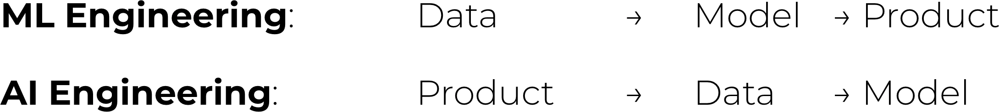
传统 ML 工程里，模型开发和产品开发经常是割裂的过程，许多组织中的 ML 工程师很少参与产品决策。基础模型时代，AI 工程师往往会更深入地参与产品构建。
总结 PDF 113–115
Summary
本章有两个目的。第一，解释基础模型可获得以后，AI 工程怎样成为一个学科；第二，概览在这些模型上构建应用所需的过程。作者希望本章达成了这两个目的。作为概览章，它只粗略触及了许多概念，本书余下部分会进一步展开。
本章讨论了近年来 AI 的快速演进。它从语言模型到大语言模型的转变开始——这种转变得益于一种叫作自监督的训练方法；随后又追踪语言模型怎样吸收其他数据模态成为基础模型，以及基础模型怎样催生 AI 工程。
AI 工程快速增长，是因为基础模型涌现出的能力支持了大量应用。本章讨论了消费者和企业中一些最成功的应用模式。尽管已经有数量惊人的 AI 应用进入生产，我们仍处于 AI 工程早期，还有无数创新尚待构建。
在构建应用之前，一个重要却经常被忽视的问题是：是否应该构建它？本章讨论了这个问题，以及构建 AI 应用时需要考虑的主要因素。
“AI 工程”虽然是一个新术语，却演化自 ML 工程——后者是使用各种 ML 模型构建应用的总括性学科。ML 工程的许多原则仍适用于 AI 工程，但 AI 工程也带来了新的挑战和解决方案。本章最后讨论了 AI 工程技术栈，以及它相较于 ML 工程发生的变化。
AI 工程还有一个特别难以用文字捕捉的方面：整个社区投入了惊人的集体能量、创造力和工程才华。这种共同热情也会让人不知所措，因为新技术、新发现和新工程成果仿佛不断出现，根本不可能全部跟上。
一个安慰是，AI 很擅长聚合信息，因此能帮助我们汇总和概括这些更新。但工具只能帮到一定程度。一个领域越令人眼花缭乱，就越需要一套框架帮助我们穿行其中。本书的目标正是提供这样的框架。
本书余下部分将逐步探索这套框架，起点是 AI 工程最基本的构件：让如此多精彩应用成为可能的基础模型。